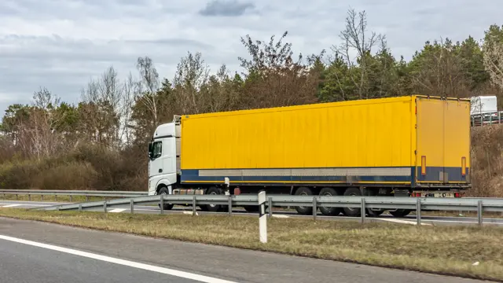
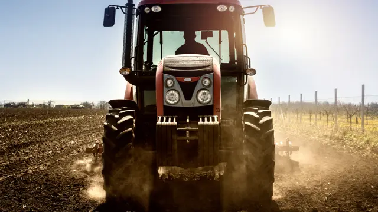

Tyre Guides
Straight answers for fleet managers, transport operators, mines and farmers: which size, which tread, what pressure and when to replace.
Truck & fleet tyres
315/80R22.5 tyres Zimbabwe315/80R22.5 Truck Tyres in Zimbabwe: Complete Buying GuideThe most common long-haul truck size in Zimbabwe, explained: what the numbers mean, which pattern goes on which axle, and what to check before you buy.Read the guide →
295/80R22.5 vs 315/80R22.5295/80R22.5 vs 315/80R22.5: What's the Difference?Two of the most common 22.5-inch truck sizes, side by side. Here is how they differ, which one suits your truck and when a swap is safe.Read the guide →

truck tyres ZimbabweBest Truck Tyres for Long-Distance Haulage in ZimbabweLong hauls on Zimbabwe's corridors are hard on tyres: heat, heavy loads and broken tar. Here is how to choose tyres that last and keep your trucks earning.Read the guide → 12R22.5 tyres12R22.5 Truck Tyres: Sizes, Applications and Buying TipsA tough, tall tyre for tippers, construction trucks and drive axles that work on and off the tar. Here is what 12R22.5 means and how to choose one.Read the guide → fleet tyres ZimbabweHow to Choose the Right Tyres for Your Delivery FleetFor a delivery fleet, tyres are a running cost you can control. Here is how to choose sizes and patterns, standardise your fleet and cut cost per kilometre.Read the guide → truck tyre replacementWhen Should Commercial Truck Tyres Be Replaced?Replace too early and you waste rubber. Replace too late and you risk a blow-out, a damaged casing and a truck stuck on the roadside. Here is how to judge it.Read the guide →Mining & OTR tyres
mining tyres ZimbabweHow to Choose Mining OTR Tyres for Loaders and Dump TrucksOTR tyres are among the biggest running costs on a mine. Here is how to read the codes, pick the right tread and construction, and make each tyre last.Read the guide →
23.5-25 tyres Zimbabwe23.5-25 Loader Tyres: A Practical Buying Guide23.5-25 is the most common tyre size on medium wheel loaders and articulated dump trucks. Here is how to choose the right one for your machine and site.Read the guide →
Agricultural tyres

tractor tyres ZimbabweTractor Tyre Sizes Explained: 18.4R38, 16.9R30 and MoreOld inch sizes, new metric sizes, R-1 and F-2 treads: tractor tyre markings confuse a lot of buyers. This guide makes them simple.Read the guide → tractor tyre pressureAgricultural Tyre Pressure: What Farmers Need to KnowThe right pressure gives more grip, less soil damage, lower fuel use and longer tyre life. Here is how to get it right on tractors, trailers and implements.Read the guide →